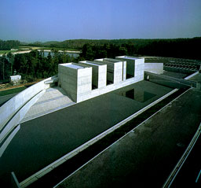
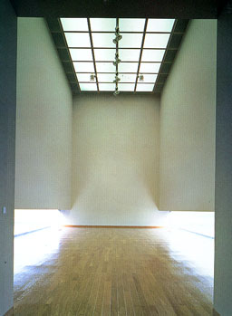
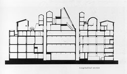
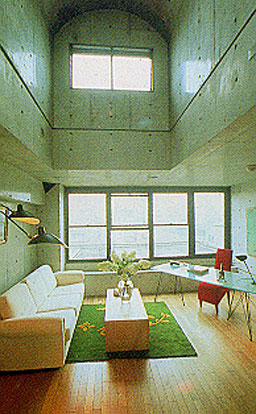
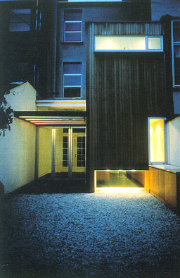
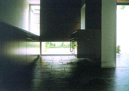
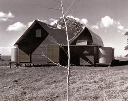
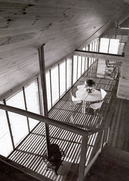

Shoji Ueda Museum of Photography, Kishimoto-cho, Tottori, Japan,
1993-1995
Skin Takamatsu

The Architecture of Museums
Francisco Asensio Cerver |
The architect combines western architecture wit
traditional Japanese architecture. The building is geometric
as well as irregular and formless. The landscape is captured
into the architectural composition of the museum. Pools reflect
the image of the surroundings. On the picture on the right You
can see an exhibition room. The windows are placed close to the
floor so all the walls can be used to show photographs. The picture
shows very well how the natural light is coming into the room
and reflects on the floor. |
 |
West Shinjuku Studio Apartments, Tokyo, 1990
Frederick Fisher

Frederick Fisher, ARCHITECT
Joseph Giovannini and Marie-Claude Beaud
1995 Rizzoli International Publications, Inc |
Three buildings were designed as can be seen
on the picture. The two at the end are made of concrete, containing
fifteen units each. Balconies and bays domesticate the buildings
and express the identity of the different units. The frame of
the centre building is made of steel so larger clearspan units
could be obtained. The interiors are characterised by high ceilings
and abundant natural light. On the picture on the right you see
light coming into the living room from a large window nearby
the floor. A smaller window nearby the double-height ceiling
makes sure the light comes also in a vertical direction more
deeply into the room. |
 |
|
Renovatie woning, Antwerpen, België, 1995-1996
Francis Catteeuw en Stefaan PlatteauJaarboek Architectuur Vlaanderen 1996-1997
Ministerie van de Vlaamse Gemeenschap |
This classic house has been restored and the
rear section, including a kitchen and bathroom has been completely
rebuilt. The rear section can be seen on the left picture. The
interior of the kitchen can be seen on the right. The facade
of the rear section faces south. To achieve privacy and to prevent
blindness a large window has been placed near the floor. The
height of the window was determined by the kitchen furniture
that cuts through the wooden outer wall and in the garden functions
as a barbecue. One should consider if the contrast between the
furniture and windows is really as pleasant as it should be.
|
 |
|
Two Houses, MT Irvine, NSW, Australia
Glenn MurcuttAward Winning Australian Architecture
Neville Quarry
|
The two houses are placed in such a way that
both families in the different houses get enough privacy but
also mutual support from each other as a visible neighbour. The
houses are built in lightweight transportable materials like
corrugated iron, which has been used for the walls, the roof
and the water-tanks. This gives the houses a unity in appearance.
Murcutt has tried to design walls with traditional materials
that can moderate the outside environment in a number of different
ways. Glass louvers on the inside and timber louvers on the outside
have to regulate the climate. The living areas in the house can
be turnt into giant verandas, so the need for often narrow and
unusable traditional verandas wasn't there anymore. On the picture
on the right the livingroom from one of the two houses can be
seen with de special designed windows (and louvers). The shadows
from the louvers on the floor have a very important roll in the
visible appearance of the interior of the house.
|
 |
|
|
|
|
|
|
|
|
|
|
|
|